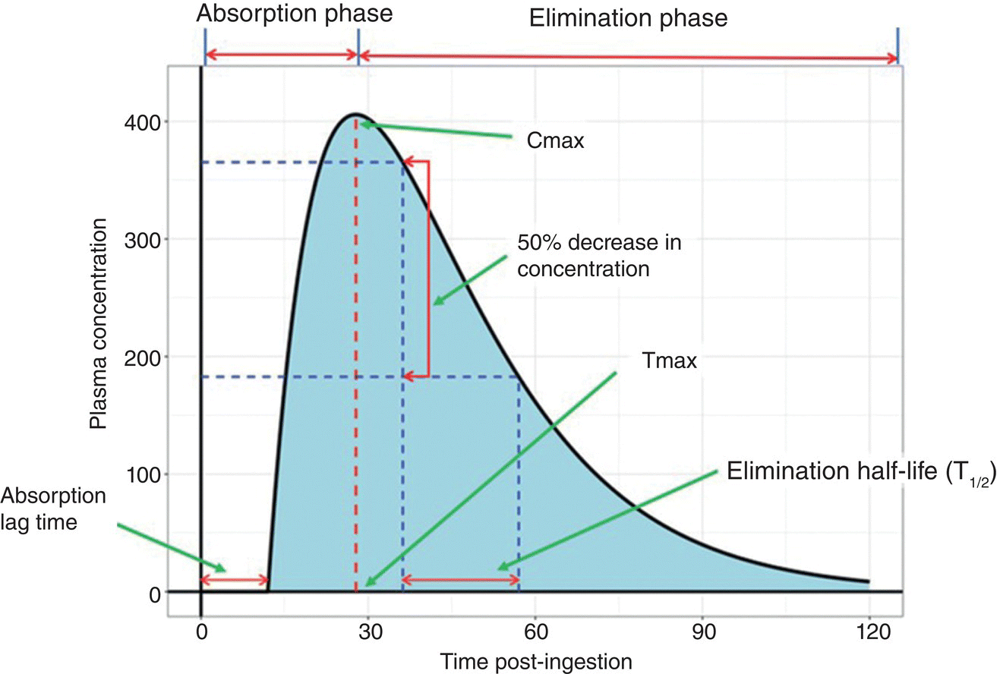

This article explores the historical development, evolution, and impact of drug delivery systems and their significance within modern healthcare. It examines how pharmaceutical products havee transformed medicine through scientific discovery and technological innovation, improving the prevention, treatment, and management of disease. This article analyses the origins and impact of drug delivery and the development of drug delivery systems in the 20th century by assessing the progression from traditional remedies to injections, nanotechnology and tablets. As well as considering future developments and challenges in science, including developing more personalised treatments. This article evaluates the role of scientific advancements in shaping the past, present and future approches to healthcare with the use of peer-reviewed articles, journals and reliable scientific resources.
Millions of lives are saved each year not only because of modern medicine, but because of the methods used to deliver them effectively within the body. Drugs have been used for thousands of years, such as those in China and Egypt relying on natural remedies derived from using plants and minerals. Overtime, this knowledge spread to the Greeks and Romans who used drugs for treatment and recreational purposes (Matyszak, P. 2024). The developmet during the nineteenth century led to advancements in pharmaceutical and modern drug delivery systems. Drug delivery is the transportation of a therapeutic agent into the body to achieve a desired effect while improving absorption and efficacy for treatment (What is Drug Delivery and how does it work? 2025). The evolution of drug delivery has transformed healthcare by overcoming biological barriers, enhancing treatment effectiveness, and improving patient outcomes (Park, K. 2016). This topic is particularly relevant to biomedical engineering, as ongoing innovations continue to shape our world.
A major breakthrough in drug delivery occurred in 1952, with one of the first modern controlled-release systems called Spansules® being produced. These formulations enabled medication to be released gradually over a 12-hour period, reducing side effects and improving treatment effectiveness (A.,B & A.,P, 2023). Controlled release technologies also improved patient adherence by reducing the frequency of dosing, making treatments more convenient for individuals managing chronic conditions such as diabetes, epilepsy, cancer, and horomone disorders (Gao et al., 2023). Advancements such as liposomes, niosomes, transdermal patches and PEGylation technologies allow drug stability, good absorption, and medications to be delivered to specific areas of the body effectively. Such as Doxil® (doxorubicin in PEGylated liposome) has been used clinically since 1996 to improve the delivery of chemotherapy drugs to tumors whilst also reducing side effects (Vega and Alonso, 2026). Despite these advantages, it is too costly and complex to manufacture so it isnt accessible to everyone.
| Year | Development |
|---|---|
| 1950 | Introduction of first slow-release drug |
| 1960 | Niosomes and liposomes |
| 1980 | Transdermal patches |
| 1990 | PEGylation |
| 2000 | Nanotechnology in drug delivery |
| 2010 | Smart drug delivery systems |
| 2020 | mRNA drug delivery |
| 2023 | AI-Based Drug formulation |
| 2024 | CRISPR-Based drug delivery |

The development of drug delivery systems has remarkably improved the efficacy, safety, and accessibility of medicines. Transdermal patches and injectable microspheres allow drugs to be released gradually over time, reducing the need for frequent dosing and improving patient compliance (Vaseem et al., 2024). These systems are beneficial for patients who have difficulty swallowing oral medications and can enhance therapeutic outcomes in areas such as pain management and hormone therapy (Alhakeem et al, 2025). Drug delivery innovations have also enabled the administration of medicines that are difficult for the body to absorb while reducing toxicity and unwanted side effects (Uzakova et al., 2025). In addition to this, with the production of drug delivery systems, there has been a decrease in healthcare costs by reducing monitoring time and administration costs. For example, insulin pens can be more cost effective than hospital alternatives (Desai, Kenney and Pezalla, 2024). It has been found that “self-administered subcutaneous immune globulin was $5,386 less costly per patient-year as compared to clinic-administered intravenous immune globulin” (Wu et al, 2025). However, there are limitations, including skin irritation from transdermal patches and restrictions on drug loading capacity (Alhakeem et al, 2025).
As we all know, 2020 was the first outbreak recorded of COVID-19 in the UK. The vaccine was developed in November 2020 by the University of Oxford and AstraZeneca (The story behind the Oxford-AstraZeneca covid-19 vaccine success 2026) with the use of lipid nanoparticles as the formulation (Park et al., 2022). This vaccine was the quickest to have ever been developed in history as it took under 12 months to go through all the research and clinical trials (Fastest Vaccine Development 2021). With the aid of nanotechnology in drug delivery, nanorobotics are engineered to recognize disease sites and release a drug only where needed and report on the treatment process. It could benefit for drug-resistant infections by penetrating biofilms (Sun et al, (2024). Using AI can reduce trial and error in the product and can help scientists predict how a drug will behave. AI could also produce personalisation in medicine such as combining characteristics of the patient (their age, weight, height, etc.) and recommend the dosing needed (Joshi and Sheth, 2025). There are a few challenges that could cause the use of AI to not be precise, such as needing large datasets, but most pharmaceutical datasets are inconsistent and incomplete, which creates problems and difficulty approving. As well as 3D printing has been given a lot of interest due to how simple it is for the printer to manufacture the tablets, implants and devices tailored to the patients’ needs. However, this would not be suitable for everyone because it would be very costly and would take some time for it to be precise (Elsevier 2021).
In conclusion, the evolution and discovery of drug delivery systems has transformed healthcare through advances in pharmaceutical science and technology. The development of drug formulations has improved treatment effectiveness, convenience, and patient quality of life. Although challenges such as high costs, complex manufacturing processes, and potential toxicity remain, the benefits outweigh this since there is a reduction in side effects and improved management of diseases. As research progresses, emerging technologies such as personalized drug delivery are expected to enhance treatment outcomes and play a role in future global healthcare.
A., B. and A., P. (2023) A review on revolutionize drug delivery with spansules, International Journal of Newgen Research
in Pharmacy & Healthcare. Available at: https://doi.org/10.61554/ijnrph.v1i1.2023.15 (Accessed: 22 October 2026).
Alhakeem, M., Sagban, H. and Almajidi, Y.Q. (2025) (PDF) The evolution of drug delivery systems: Historical advances and future
directions, ReasearchGate. Available at: https://www.researchgate.net/publication/392285288_The_Evolution_of_Drug_Delivery_Systems_Historical_Advances_and_Future_Directions
(Accessed: 23 October 2026).
Anselmo, A. C. & Mitragotri, S. (2014) An overview of clinical and commercial impact of drug delivery systems. Journal of controlled
release. [Online] 19015–28. Available at:Scholarly Article or Book Chapter | An overview of clinical and commercial impact of drug
delivery systems | ID: 1n79hd55z | Carolina Digital Repository(Accessed: 21 October 2026)
Barrett, J.S. (2022) Fundamentals of Drug Development. Hoboken, NJ: Wiley. Available at: https://app.knovel.com
(Accessed: 2 November 2026)
Desai, M., Kenney, J. and Pezalla, E. (2024) ‘Evaluating unmet needs in large-volume subcutaneous drug delivery: U.S. payer
perspectives on a novel, large-volume on-body delivery system’, Current Medical Research and Opinion.
Available at: https://www.tandfonline.com/doi/full/10.1080/03007995.2024.2351165 (Accessed: 23 October 2026)
Elsevier (2021) 3D printing in Medicine: Technology Overview and Drug Delivery Applications - sciencedirect, Sciencedirect.
Available at: https://www.sciencedirect.com/science/article/pii/S2666964121000321 (Accessed: 24 October 2026).
Gao, J. et al. (2023) The Future of Drug Delivery, Chemistry of materials : a publication of the American Chemical Society.
Available at: https://pmc.ncbi.nlm.nih.gov/articles/PMC10553157/ (Accessed: 21 October 2026).
Joshi, S. and Sheth, S. (2025) 'Artificial intelligence (AI) in pharmaceutical formulation and dosage calculations,' Pharmaceutics,
17(11), p. 1440. https://doi.org/10.3390/pharmaceutics17111440 (Accessed: 24 October 2026)
Matyszak, P. (2024) Happy plants and laughing weeds: How people of the Ancient World used – and abused – drugs,
HistoryExtra. Available at: https://www.historyextra.com/period/ancient-history/ancient-drug-use-history-how-what-for-opium-hemp/
(Accessed: 18 October 2026).
Park, H., Otte, A. and Park, K. (2022) Evolution of Drug Delivery Systems: From 1950 to 2020 and beyond, Journal of controlled
release: official journal of the Controlled Release Society. Available at: https://pmc.ncbi.nlm.nih.gov/articles/PMC8840987/
(Accessed: 22 October 2026).
Park, K. (2016) Drug Delivery Research: The invention cycle, Molecular pharmaceutics.
Available at: https://pmc.ncbi.nlm.nih.gov/articles/PMC5321135/ (Accessed: 18 October 2026).
ScienceInsights What is drug delivery and how does it work? (2025). Available at: https://scienceinsights.org/what-is-drug-delivery-and-how-does-it-work/
(Accessed: 17 October 2026).
Sun, T. et al. (2024) 'Application of micro/nanorobot in medicine,' Frontiers in Bioengineering and Biotechnology,
12, p. 1347312. https://doi.org/10.3389/fbioe.2024.1347312 (Accessed: 24 October 2026)
Uzakova, A.B. et al. (2025) A systematic review of Advanced Drug Delivery Systems: Engineering Strategies, barrier penetration,
and Clinical Progress (2016-April 2025), Pharmaceutics. Available at: https://pmc.ncbi.nlm.nih.gov/articles/PMC12845006/
(Accessed: 23 October 2026).
Vaseem, R.S. et al. (2024) Transdermal Drug Delivery Systems: A focused review of the physical methods of permeation enhancement,
Advanced pharmaceutical bulletin. Available at: https://pmc.ncbi.nlm.nih.gov/articles/PMC10997930/ (Accessed: 23 October 2026).
Vega, M.A. and Alonso, C. (2026) The changing landscape of advanced drug delivery: From passive carriers to intelligent
therapeutic platforms, MDPI. Available at: https://www.mdpi.com/1999-4923/18/7/835 (Accessed: 21 October 2026).
Wu, A. et al. (2025) The transformative potential of large-volume subcutaneous drug delivery: A discussion of current capabilities
and future prospects for pharmaceutical manufacturers - Discover Pharmaceutical Sciences, SpringerLink.
Available at: https://link.springer.com/article/10.1007/s44395-025-00012-6? (Accessed: 23 October 2026).
The story behind the Oxford-astrazeneca covid-19 vaccine success (2026) UKRI. Available at:
https://www.ukri.org/who-we-are/how-we-are-doing/research-outcomes-and-impact/mrc/the-story-behind-the-oxford-astrazeneca-covid-19-vaccine-success/
(Accessed: 22 October 2026).
Fastest Vaccine Development (2021) Guinness World Records. Available at: https://www.guinnessworldrecords.com/world-records/646592-fastest-vaccine-development
(Accessed: 22 October 2026).